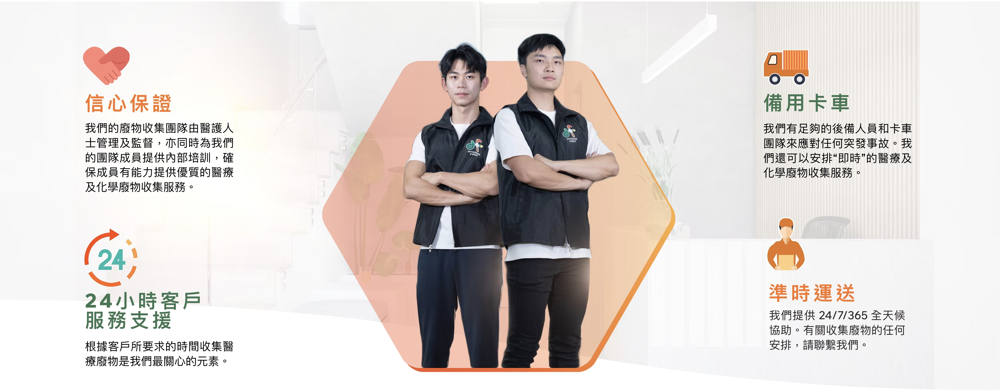

醫療及化學廢物收集服務
我們提供專業的醫療及化學廢物收集服務，確保所有廢物得到安全、環保的處理。
信心保證
Hygiene First 首衛運送團隊 由具專業背景的醫護人員全程管理與監督，並為所有團隊成員提供定期且系統化的內部培訓，確保他們掌握處理醫療及化學廢物所需的專業知識與安全操作技巧。我們致力為每位客戶提供安全、高效、合規的廢物收集服務，讓您在處理敏感物料時無後顧之憂。
醫護人士管理
由專業醫護人士管理和監督所有廢物收集流程
內部培訓
為團隊成員提供專業的內部培訓，確保服務品質
品質保證
確保有能力提供優質的醫療及化學廢物收集服務

立即聯絡我們
如需了解更多關於我們的醫療及化學廢物收集服務，歡迎隨時聯絡我們的專業團隊。我們樂意為您提供詳盡資訊與合適建議。